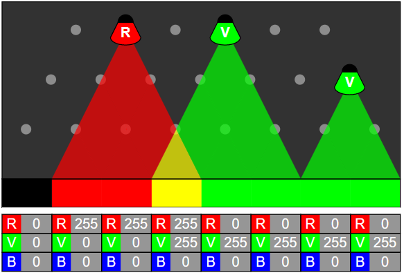
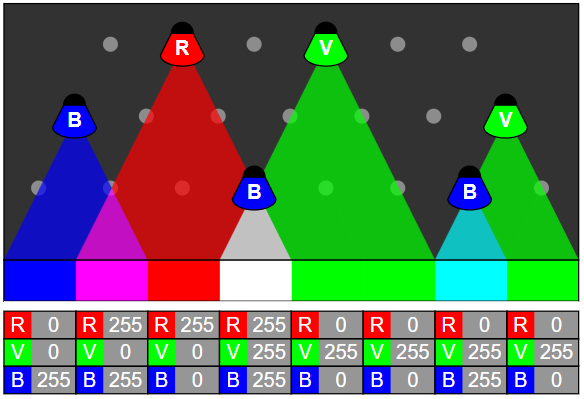
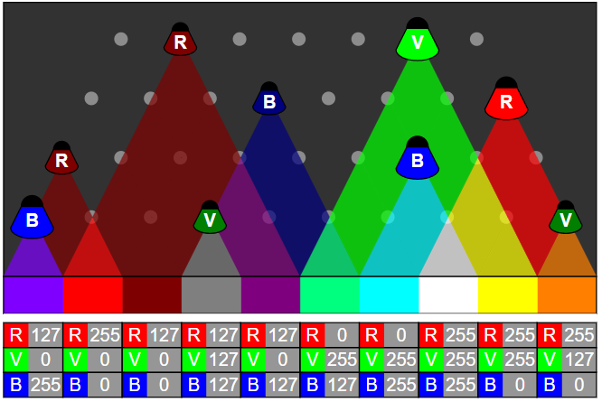

Solution
Voici la solution :

On peut procéder couleur par couleur, en cherchant à chaque fois à placer les lampes le plus haut possible, de sorte à en utiliser le plus petit nombre possible. Commençons par le rouge.

Puis ajoutons le vert.

Et terminons par le bleu.

On peut procéder couleur par couleur, en cherchant à chaque fois à placer les lampes le plus haut possible, de sorte à en utiliser le plus petit nombre possible. Commençons par le rouge.

Puis ajoutons le vert.

Et terminons par le bleu.

C'est de l'informatique !
En informatique, les couleurs sont la plupart du temps représentées à l'aide de 3 nombres compris en 0 et 255. Le premier décrit l'intensité du rouge, le second l'intensité du vert, et le troisième l'intensité du bleu. Additionner des sources de lumière de ces trois couleurs permet d'en produire de nombreuses autres.
Si vous observez à la loupe un écran couleur d'ordinateur, de téléphone ou de télévision, vous verrez que chaque pixel est en fait composé de ces trois couleurs :

L'oeil humain lui-même utilise trois types de cônes photorecepteurs pour voir les couleurs, sensibles à différentes plages de longueurs d'onde de lumière. Les couleurs rouge, vert et bleu des écrans ont été choisies pour s'y adapter et permettre de représenter simplement une grande partie des couleurs que nous sommes capables de percevoir.
Pour représenter un nombre entre 0 et 255, il faut encoder 256 possibilités, c'est-à-dire "2 puissance 8". Les ordinateurs comptent en binaire, c'est-à-dire en utilisant que les chiffres 0 et 1. Pour représenter un nombre entre 0 (inclus) et "2 puissance 8" (exclus), on a besoin de 8 bits. Vu qu'il faut 8 bits pour décrire l'intensité du rouge, 8 pour le vert, et 8 pour le bleu, en tout il faut 24 bits pour représenter une couleur.
On parle en informatique d'une image 24 bits pour décrire la précision avec laquelle les couleurs de l'image sont représentées. On entend également parfois dire en 16 millions de couleurs, car 256*256*256 est égal à 16777216, soit un peu plus de 16 millions.